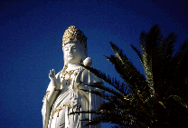
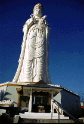
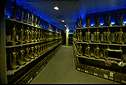
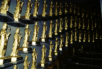
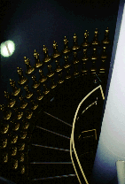
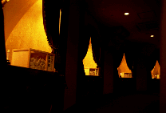
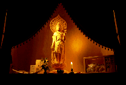
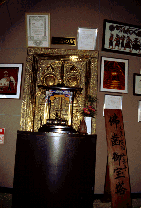
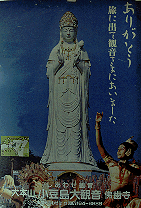

仏歯寺（小豆島大観音）/香川県土庄町
 
小豆島大観音は小豆島の中心地土庄の港から車で20分程行った山の上にある。正確な大きさは解らないが50メートル以上はあるだろう。一般公開は平成7年との事。
小豆島の新しい観光地として目下売り出し中だ・・・といいたいところだがどうも地元の観光案内地図などにはあまり載ってない。ガンガン宣伝して早く全国の大観音の兄貴達のように名所となって欲しいものである。
というわけで、小豆島に遊びに行った際には二十四の瞳のセットだけじゃなくて大観音も見に行きましょう。頼んだよ。
この大観音、正式には大本山小豆島大観音佛歯寺といい、スリランカのお寺より寄贈されたお釈迦様の歯が胎内に納められている。その姿はなみいる大観音の中でも良く出来ている部類に入るだろう。純白の大観音像は左手には蓮の華を持ち、ちょっとブリブリのポーズ。冠やネックレスなどのアクセサリー類は金ペイントされておりその緻密な成形とあいまってお洒落な感じさえする。別名しあわせ観音。
境内の施設としてはこの大観音と土産物屋兼食堂しかないが駐車場だけは充実している。私が訪れた日はガラ空きだったが、もしかして普段はガンガン参拝者がきてるのか？そんな事ないか。
  
で、台座部分から大観音の中に入る。下から順を追って行こう。1階には大観音と同形の本尊、しあわせ観音が祀られている護摩殿や説法をする部屋などがあり、２階には大観音ものにはお馴染みの十二支守り本尊が並ぶスペース。そしてそこから最上階の仏歯の間までは螺旋階段が続き、これまたお馴染みの万体観音が延々延々延々と壁面に並んでいる。途中ブラックライトなどを使用していたりして、ちょっとスペ−シーだったりする。螺旋階段を登って行くと目がまわっちゃう、という人はエレベーターで最上階まで行ってくれ。
  
そして最上階の仏歯の間。この大観音の心臓部だ。文字通り観音さまの胸のあたりにある。金ピカのすんごいゴージャスな扉の前に甘茶＆天上天下唯我独尊像が置かれている。その扉の奥にお釈迦様の歯が納められているそうだ。縁日＆特別参拝の場合は扉が開かれるらしい。そしてその周りにはスリランカの写真や国旗、民芸グッズが。中にはスリランカの首相（だっけか）の手紙まであったりして、この寺のハクづけに一役買っている。
これで大観音ツアーはおしまい。大観音としては個性的なところは少なかったが、外観の正統的な美しさとスリランカをフューチャーリングしてあるところが良い味付けとなっている、というのが見終わってからの感想だ。ま、土産物屋で見たポスターが一番秀逸だったかな。
あとオリジナルキティちゃんお守りも御時世に迎合していて可笑しかった。

1998.12
2011.再訪しました。再訪記
珍寺大道場
HOME